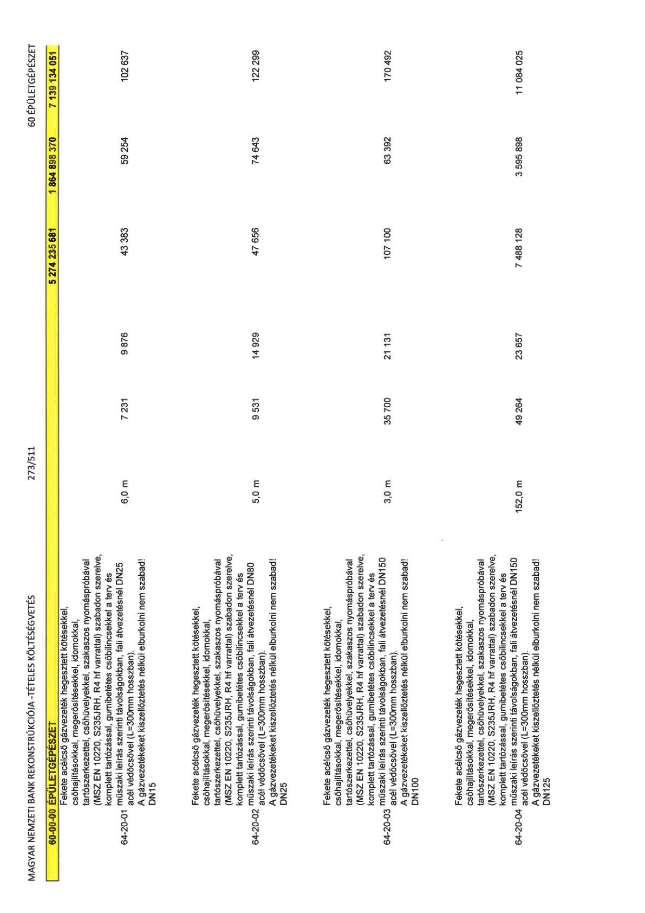

| Tétel | Menny. | Egys. | Anyag e.ár (net HUF) | Díj e.ár (net HUF) | Anyag összesen (net HUF) | Díj összesen (net HUF) | Anyag+Díj összesen (net HUF) |
|---|---|---|---|---|---|---|---|
| 60-00-00 ÉPÜLETGÉPÉSZET | NaN | NaN | 0 | 0 | 5 274 235 681 | 1 864 898 370 | 7 139 134 051 |
| Fekete acélcső gázvezeték hegesztett kötésekkel, csőhajlításokkal, megerősítésekkel, idomokkal, tartószerkezettel, csőhüvelyekkel, szakaszos nyomáspróbával (MSZ EN 10220, S235JRH, R4 hf varrattal) szabadon szerelve, komplett tartózással, gumibetétes csőbilincsekkel a terv és műszaki leírás szerinti távolságokban, fali átvezetésnél DN25 acél védőcsővel (L=300mm hosszban). A gázvezetékeket kiszellőztetés nélkül elburkolni nem szabad! DN15 | 0 | 0 | 0 | 0 | 0 | 0 | 0 |
| 64-20-01 | 6,0 | m | 7 231 | 9 876 | 43 383 | 59 254 | 102 637 |
| Fekete acélcső gázvezeték hegesztett kötésekkel, csőhajlításokkal, megerősítésekkel, idomokkal, tartószerkezettel, csőhüvelyekkel, szakaszos nyomáspróbával (MSZ EN 10220, S235JRH, R4 hf varrattal) szabadon szerelve, komplett tartózással, gumibetétes csőbilincsekkel a terv és műszaki leírás szerinti távolságokban, fali átvezetésnél DN80 acél védőcsővel (L=300mm hosszban). A gázvezetékeket kiszellőztetés nélkül elburkolni nem szabad! DN25 | 0 | 0 | 0 | 0 | 0 | 0 | 0 |
| 64-20-02 | 5,0 | m | 9 531 | 14 929 | 47 656 | 74 643 | 122 299 |
| Fekete acélcső gázvezeték hegesztett kötésekkel, csőhajlításokkal, megerősítésekkel, idomokkal, tartószerkezettel, csőhüvelyekkel, szakaszos nyomáspróbával (MSZ EN 10220, S235JRH, R4 hf varrattal) szabadon szerelve, komplett tartózással, gumibetétes csőbilincsekkel a terv és műszaki leírás szerinti távolságokban, fali átvezetésnél DN150 acél védőcsővel (L=300mm hosszban). A gázvezetékeket kiszellőztetés nélkül elburkolni nem szabad! DN100 | 0 | 0 | 0 | 0 | 0 | 0 | 0 |
| 64-20-03 | 3,0 | m | 35 700 | 21 131 | 107 100 | 63 392 | 170 492 |
| Fekete acélcső gázvezeték hegesztett kötésekkel, csőhajlításokkal, megerősítésekkel, idomokkal, tartószerkezettel, csőhüvelyekkel, szakaszos nyomáspróbával (MSZ EN 10220, S235JRH, R4 hf varrattal) szabadon szerelve, komplett tartózással, gumibetétes csőbilincsekkel a terv és műszaki leírás szerinti távolságokban, fali átvezetésnél DN150 acél védőcsővel (L=300mm hosszban). A gázvezetékeket kiszellőztetés nélkül elburkolni nem szabad! DN125 | 0 | 0 | 0 | 0 | 0 | 0 | 0 |
| 64-20-04 | 152,0 | m | 49 264 | 23 657 | 7 488 128 | 3 595 898 | 11 084 025 |
